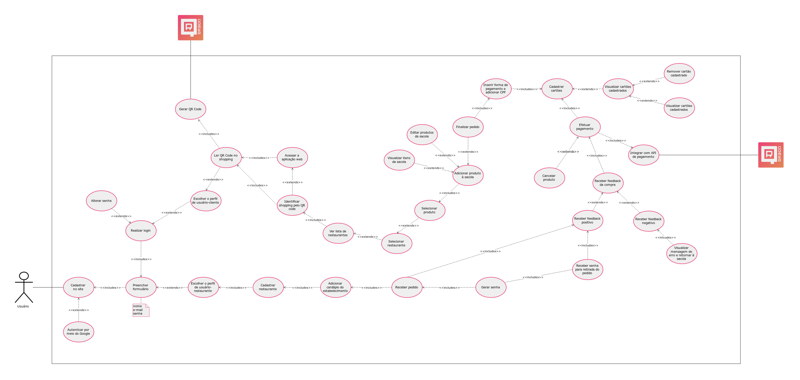

Documento arquitetura
Histórico de Revisão
| Data | Versão | Descrição | Autor |
|---|---|---|---|
| 12/09/2019 | 0.1 | Criação do documento, e adição da estrutura e diagramas de pacote | Shayane Alcântara |
| 15/09/2019 | 0.2 | Adição da 1ª versão do caso de uso sobre a aplicação | Shayane Alcântara |
| 16/09/2019 | 0.3 | Adição da 1ª versão do diagrama de classe do microserviço de usuário | Sara Silva |
1. Introdução
1.1 Objetivo
1.2 Escopo
1.3 Definições, Acrônimos e Abreviações
2. Representação arquitetural
[Resumo conciso da tecnologia e um diagrama de cada subtópico abaixo]
2.1 Django REST Framework
2.2 Vue.js
3. Restrições e Restrições arquiteturais
[Esta seção descrever os requisitos de software e restrições que tem um impacto significante na arquitetura.]
4. Visão de Casos de Uso
[Esta seção lista as especificações centrais e significantes para a arquitetura do sistema em relação aos atores da aplicação.]
4.1 Caso de Uso sobre a aplicação com requisitos de priorização Must have)
O diagrama a seguir foi realizado baseando-se na elicitação de requisitos realizada pela equipe. Este diagrama busca ilustrar os requisitos e suas relações, em específico os que foram priorizados com o nível MUST HAVE.

| UC01 | Caso de Uso dos Requisitos |
|---|---|
| Versão | Atual: 1.0 (15/09) Anterior: - |
| Descrição | Caso de uso dos requisitos. |
| Autor | Shayane Alcântara |
5. Visão Lógica
[Descrever uma visão lógica da arquitetura. Descrever as classes mais importantes, sua organização em pacotes de serviços e subsistemas. Diagramas de classes e sequência devem ser incluídos para ilustrar os relacionamentos entre as classes significativas na arquitetura, subsistemas, pacotes e camadas. Descrever também a relação de Vue.js com Django Rest no contexto do projeto e descrição breve dos pacotes.]
5.1 Diagrama de relações
[Relação macro dos componentes.]
5.2 Diagrama de pacotes
[Basta uma imagem do diagrama nos tópicos abaixo.]
5.2.1 Back-end
5.2.2 Front-end
6. Visão de implementação
6.1 Diagrama de classes e microserviços
6.1.1 Diagrama de classes do microserviço de usuário
O diagrama a seguir usa a notação UML para descrever as classes do microserviço de usuário.

| DC01 | Diagrama de classes de usuário |
|---|---|
| Versão | Atual: 1.0 (16/09) Anterior: - |
| Descrição | Diagrama UML das classes do microserviço de usuário |
| Autor | Sara Silva e Pedro Rodrigues |